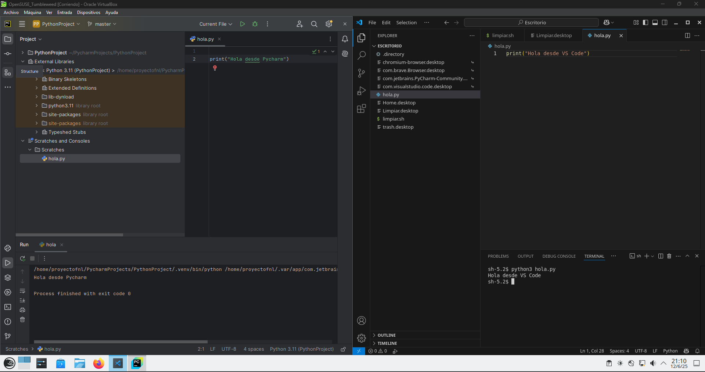
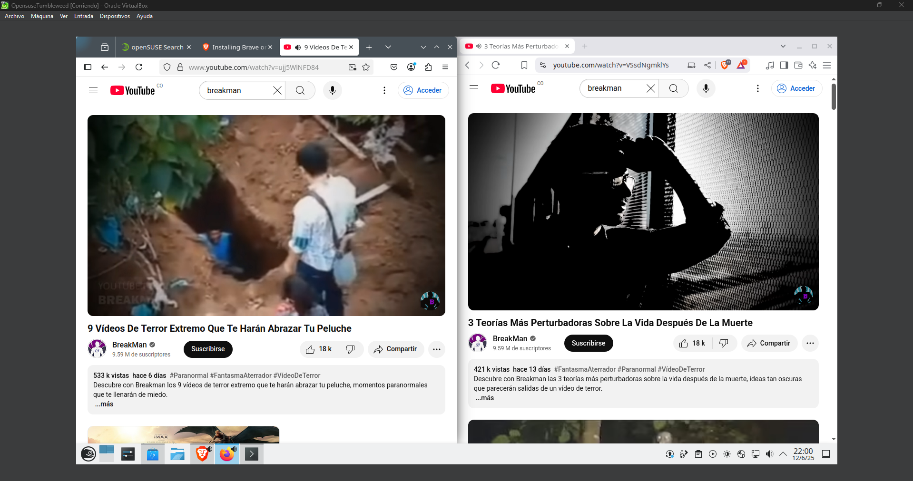
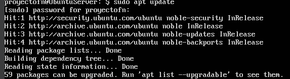
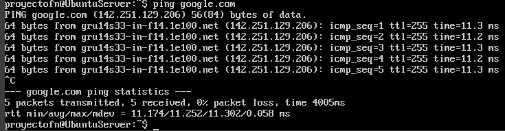
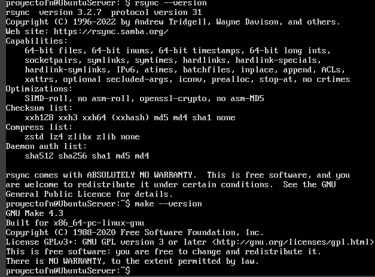
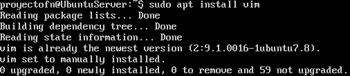
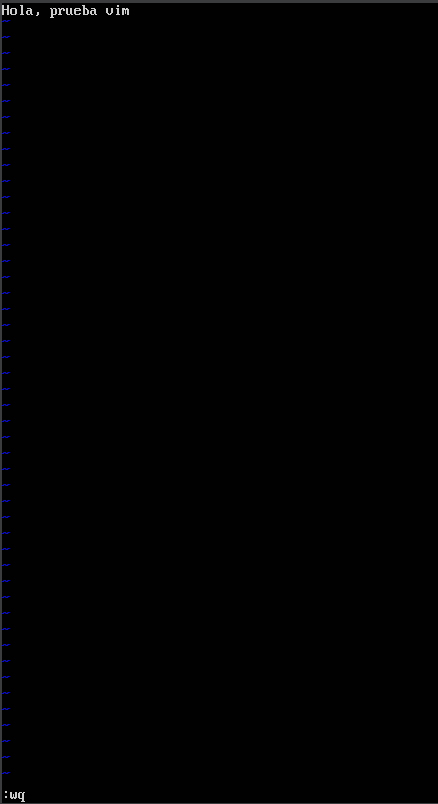

Este proyecto final tiene como propósito aplicar de manera práctica los conocimientos adquiridos durante la asignatura de Sistemas Operativos. A través de la instalación de distribuciones Linux, el uso de la terminal, la automatización con scripts Bash, y la implementación de contenedores Docker y Kubernetes, se busca fortalecer las competencias técnicas de nosotros como estudiantes en el manejo de sistemas.
Objetivos
Instalar y configurar distribuciones Linux tanto en entornos gráficos como en consola.
Usar editores de texto y entornos de desarrollo para ejecutar tareas básicas.
Desarrollar scripts Bash para automatizar procesos del sistema.
Instalar y utilizar Docker para crear contenedores personalizados.
Subir imágenes a Docker Hub y gestionar su despliegue.
Instalar y probar Kubernetes ejecutando pods con imágenes personalizadas.
Documentar y presentar todo el proceso mediante una página web funcional.
Este proyecto representa una integración de habilidades esenciales para el desarrollo profesional en áreas relacionadas con la administración de sistemas, DevOps y desarrollo de software sobre plataformas Linux.
Instalacion y configuracion de distribuciones de Linux
1.1 Instalación de OpenSUSE (Gráfico)
Se instalo openSUSE Tumbleweed con entorno grafico, ademas de la instalacion de navegadores y
editores de codigo.
Aqui comprobamos que en efecto funcionan los editores de codigo:

Despues comprobamos que los navegadoes funcionan correctamente:

Instalación de Ubuntu Server (Consola)
Instalamos Ubuntu server en modo consola y se integran herramientas como make, curl y git
Cargamos los paquetes actualizados que nos ofrece:

Verificamos que nuestra conexion en el servidor este funcionando:

Por ultimo verificamos que nuestra instalacion de rsync no ha fallado:

Instalacion y configuracion de editores de texto y entornos de desarrollo
2.1 Instalacion
Primero actualizamos los paquetes, lo mostramos en imagen y tambien lo aclaramos en el video de mas adelante:
A continuacion un video explicativo sobre el funcionamiento de nano:
Ahora probamos con el editor de texto vim, primero lo descargamos:

Despues probamos dentro del editor de texto, ponemos una imfirmacion:

Por ultimo verificamos que nuestro txt si se creo:
Para poder ejecutar los scripts que creamos en el entorno gráfico y consola, fue necesario darles permisos usando el siguiente comando:
chmod +x nombre_del_script.sh
Docker y Kubernetes
4.1 Instalación de Docker Desktop
Se realizó la instalación correcta de Docker Desktop, asegurando que todas las dependencias estén presentes.
4.2 Creación de imagen Docker
Se creó una imagen funcional basada en Ubuntu 20.04 que incluye aplicaciones como Vim, Nano, Curl, etc.
# Dockerfile usado:
# imagen base
FROM ubuntu:20.04
# evitar prompts
ENV DEBIAN_FRONTEND=noninteractive
#actualizar e instalar herramientas
RUN apt update && apt install -y \
vim \
nano \
curl \
wget
# comando por defecto
CMD ["sleep", "infinity"]
Primero creamos la carpeta que contendra el archivo Dockerfile
Creamos el archivo Dockerfile dentro de la carpeta
Agregamos nuestro contenido al archivo, este usa como base ubuntu:20.04. Evita preguntas interactivas al instalar, instala vim, nano, curl y wget. Deja el contenedor corriendo sin fin con sleep infinity.
Copiamos la ruta del archivo
Dentro del cmd ponemos la ruta que copiamos
Con con el comando docker build -t (nombre) . creamos una imagen docker usando el Dockerfile en el directorio actual
Con esto tendriamos nuestra imagen en Desktop y pasariamos a la creacion de un contenedor
4.3 Creación de contenedor
Se ejecutó un contenedor con la imagen personalizada, verificando su funcionalidad.
5.1 Modificación de imagen
Se modificó la imagen para agregar herramientas ofimáticas y entornos adicionales.
Una vez ejecutadas las lineas de codigo de la anterior imagen queda en evidencia el uso de la nueva herramientas instalada.
5.2 Publicación en Docker Hub
Para poder publicar hacemos uso de las siguientes lineas de codigo.
Enlace al repositorio: https://hub.docker.com/repository/docker/justbrayan/ult_img_proyecto_final/general
6.1 Instalación de Kubernetes en Docker Desktop
Se habilitó Kubernetes desde Docker Desktop y se verificó su correcto funcionamiento.
Verificamos instalacion con la version Kubernet
6.2 Creación y ejecución de un pod
Se creó un pod que ejecuta la imagen personalizada de Linux, verificando su correcta ejecución.
Primero creamos la carpeta que contendra nuestro archivo .yaml .
Creamos nuestro archivo .yaml el con el siguiente contenido. Este archivo le dice a Kubernetes que cree un pod usando la imagen personalizada.